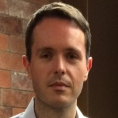
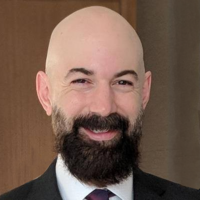

<table class="team"><tr>
<td class="experience">
<div>Founder
Landale Research LLC
Nov 2018 - Present · 4 yrs 6 mos
</div>
<div>Co-Founder
Trading Firm
Aug 2013 - Present · 9 yrs 9 mos
Hong Kong SAR
</div>
<div>Portfolio Manager
Hedge Fund
Aug 2011 - Jul 2013 · 2 yrs
Asia
</div>
<div>Researcher
Headlands Technologies LLC
Feb 2010 - Jun 2011 · 1 yr 5 mos
San Francisco
</div>
<div>CFO/Chief Computer Scientist
Hadal, Inc.
Jan 2009 - Feb 2010 · 1 yr 2 mos
San Francisco
</div>
<div>Executive Director
Morgan Stanley
Aug 1998 - Mar 2008 · 9 yrs 8 mos
Tokyo &amp; New York
</div>

</td>

<td class="experience">
<div>Director Equity Sales
Deutsche Bank
Oct 2018 - Aug 2019 · 11 mos
Hong Kong SAR
</div>
<div>Research Developer
Turbobyte Software
Aug 2013 - Jan 2018 · 4 yrs 6 mos
San Francisco, California
</div>
<div>Senior Developer / Portfolio Manager
Hedge Fund
Aug 2011 - Jul 2013 · 2 yrs
San Francisco
</div>
<div>Research Developer
Headlands Technologies LLC
Mar 2010 - Mar 2011 · 1 yr 1 mo
San Francisco, California
</div>
<div>Executive Director, Equities
UBS Securities Japan
Mar 2005 - Mar 2010 · 5 yrs 1 mo
Tokyo, Japan
</div>
<div>Vice President, Equity Trading
PDT (Process Driven Trading, Morgan Stanley)
Aug 2003 - Mar 2005 · 1 yr 8 mos
Tokyo, Japan
</div>
<div>Vice President, IT
Morgan Stanley
Mar 1998 - Aug 2003 · 5 yrs 6 mos
Tokyo, Japan
</div> </td></tr>
</table>
